Smearing Functions
Sometimes the instrumental geometry used to acquire the experimental data has an impact on the clarity of features in the reduced scattering curve. For example, peaks or fringes might be slightly broadened. This is known as Q resolution smearing. To compensate for this effect one can either try and remove the resolution contribution - a process called desmearing - or add the resolution contribution into a model calculation/simulation (which by definition will be exact) to make it more representative of what has been measured experimentally - a process called smearing. SasView will do the latter.
Both smearing and desmearing rely on functions to describe the resolution effect. SasView provides three smearing algorithms:
- Slit Smearing
- Pinhole Smearing
- 2D Smearing
SasView also has an option to use Q resolution data (estimated at the time of data reduction) supplied in a reduced data file: the Use dQ data radio button.
dQ Smearing
If this option is checked, SasView will assume that the supplied dQ values represent the standard deviations of Gaussian functions.
Slit Smearing
This type of smearing is normally only encountered with data from X-ray Kratky cameras or X-ray/neutron Bonse-Hart USAXS/USANS instruments.
The slit-smeared scattering intensity is defined by
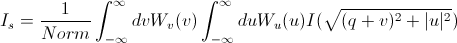where Norm is given by
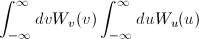[Equation 1]
The functions 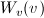 and 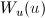 refer to the slit width weighting function and the slit height weighting determined at the given q point, respectively. It is assumed that the weighting function is described by a rectangular function, such that
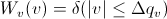[Equation 2]
and
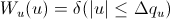[Equation 3]
so that 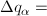 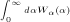 for 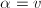 and u.
Here 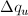 and 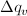 stand for the slit height (FWHM/2) and the slit width (FWHM/2) in q space.
This simplifies the integral in Equation 1 to
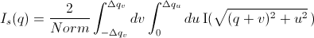[Equation 4]
which may be solved numerically, depending on the nature of and .
Solution 1
For = 0 and = constant.
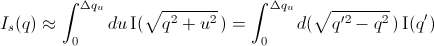For discrete q values, at the q values of the data points and at the q values extended up to qN= qi + the smeared intensity can be approximately calculated as
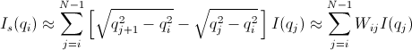[Equation 5]
where 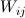 = 0 for Is when j < i or j > N-1.
Solution 2
For = constant and = 0.
Similar to Case 1
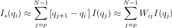 for qp = qi - and qN = qi +
[Equation 6]
where = 0 for Is when j < p or j > N-1.
Solution 3
For = constant and = constant.
In this case, the best way is to perform the integration of Equation 1 numerically for both slit height and slit width. However, the numerical integration is imperfect unless a large number of iterations, say, at least 10000 by 10000 for each element of the matrix W, is performed. This is usually too slow for routine use.
An alternative approach is used in SasView which assumes slit width << slit height. This method combines Solution 1 with the numerical integration for the slit width. Then
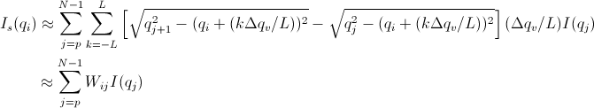[Equation 7]
for qp = qi - and qN = qi +
where = 0 for Is when j < p or j > N-1.
Pinhole Smearing
This is the type of smearing normally encountered with data from synchrotron SAXS cameras and SANS instruments.
The pinhole smearing computation is performed in a similar fashion to the slit- smeared case above except that the weight function used is a Gaussian. Thus Equation 6 becomes
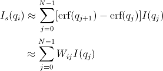[Equation 8]
2D Smearing
The 2D smearing computation is performed in a similar fashion to the 1D pinhole smearing above except that the weight function used is a 2D elliptical Gaussian. Thus
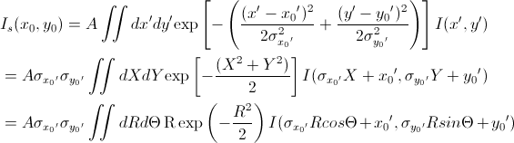[Equation 9]
In Equation 9, x0 = q cos(θ), y0 = q sin(θ), and the primed axes, are all in the coordinate rotated by an angle θ about the z-axis (see the figure below) so that x’0 = x0 cos(θ) + y0 sin(θ) and y’0 = -x0 sin(θ) + y0 cos(θ). Note that the rotation angle is zero for a x-y symmetric elliptical Gaussian distribution. The A is a normalization factor.
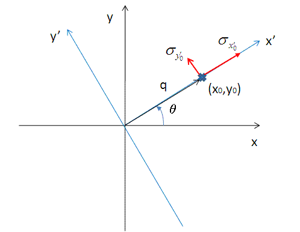Now we consider a numerical integration where each of the bins in θ and R are evenly (this is to simplify the equation below) distributed by Δθ and ΔR, respectively, and it is further assumed that I(x’,y’) is constant within the bins. Then
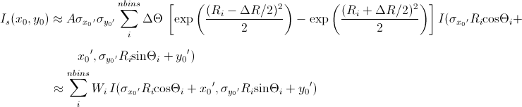[Equation 10]
Since the weighting factor on each of the bins is known, it is convenient to transform x’-y’ back to x-y coordinates (by rotating it by -θ around the z axis).
Then, for a polar symmetric smear
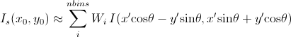[Equation 11]
where
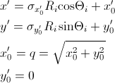while for a x-y symmetric smear
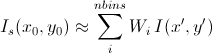[Equation 12]
where
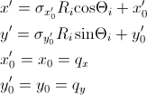The current version of the SasView uses Equation 11 for 2D smearing, assuming that all the Gaussian weighting functions are aligned in the polar coordinate.
Weighting & Normalization
In all the cases above, the weighting matrix W is calculated on the first call to a smearing function, and includes ~60 q values (finely and evenly binned) below (>0) and above the q range of data in order to smear all data points for a given model and slit/pinhole size. The Norm factor is found numerically with the weighting matrix and applied on the computation of Is.
Note
This help document was last changed by Steve King, 01May2015